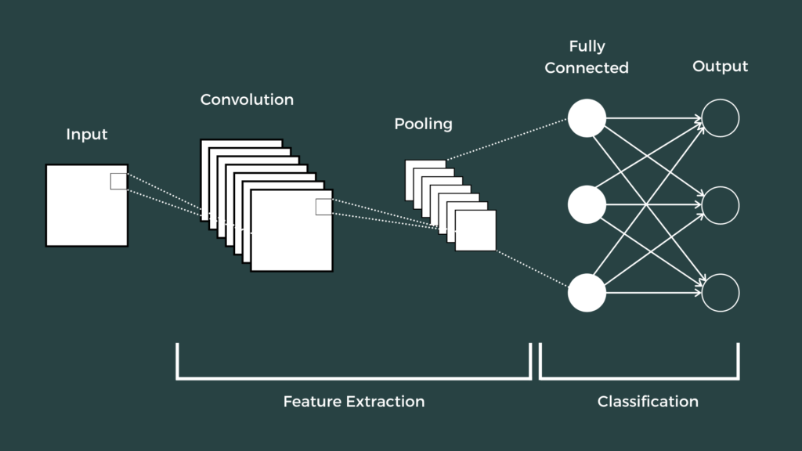

Convolutional Network Architecture
Contents
The performance of Machine Learning models are highly dependent on their hyperparameters. NN’s flexibility also means that there are more hyperparameters to tune, which may involve deciding the number of layers and the number of nodes per layer; tweaking these two hyperparameters can also be refered to as tweaking the architecture of the network.
Machine Learning models can be tweaked through trial and error, combined with intuition and experience. To be more precise and rigorous, one can model the architecture search problem as a discrete optimization problem. However, discrete optimization is much harder than continuous optimization, many NP-hard problems fall within this category.
Reinforcement Learning and Evolutionary Algorithms have been applied to search for good solutions to the discrete problem however they require a lot of computational resource. By modelling the problem as a continuous optimization problem, DARTS produce highly competive results in much less time when compared to the aforementioned non-differentiable search techniques.
Convolutional Network Architecture#

The first part of the CNN is basically ‘feature extraction’, where convolutional filters (to extract feature(s) from the input) and pooling (to reduce the dimensions) are applied. These are repeated N number of times sequentially depending on the problem.
In the second part, output from the first part is flattened and fed into the usual artificial neural network for classification.
DARTS overview#
DARTS optimizes one convolutional cell at a time. More precisely, it looks for the optimal sequence of operations within each cell. But what is a cell?
In DARTS, a cell basically takes inputs from the 2 previous layers, apply convolutional filters, pooling, concat and output to the next layer. The concatenation step is always at the end before obtaining the output. However, we want to search for the optimal selection and sequence of operations for the rest of the cell so our equations should incoporate some flexibility to allow for all the possible combinations.
Within a cell, each intermediate node is computed based on all of the previous nodes.
Within each node, we assign probabilities to all the possible operations and select the operation with the highest probablity. This is how we turn the architecture search from a discrete into a continuous optimization problem.
Each of the \(\alpha\) stands for the mixing weight of an operation \(o(x)\). So for operation \(o_1\) we would have weight \(\alpha_1\), for operation \(o_2\) we have \(\alpha_2\), so on and so forth.
We divide the \(exp^{weight}\) of a given operation by the sum of all \(exp^{weight}\) to obtain the probability of that operation being selected.
Also within each operation \(o(x)\) we have the weights of the convolutional filter, for a 3x3x3 filter that would be 27 weights.
We optimize the mixing weights of the operations and the convolutional weights with bilevel optimisation, such that the validation loss is minimized.
Optimization Methodology and Approximation#
Given a chosen architecture, to obtain the best CNN possible we’d still have to optimize the weights of our convolutional filters. Thus the outer optimization problem is one of choosing the optimal operations for a cell, the inner optimization problem is one of choosing the optimal weights for our convolutional filters. The outer problem is constrained by the inner problem.
The bilevel optimization is formulated as:
\(\underset{\alpha}{min} \ \ L_{val} (w^*(\alpha),\alpha)\)
\(s.t \ \ \ \ w^*(\alpha) = \underset{w}{argmin} \ L_{train} (w,\alpha)\)
Mathematically, we could solve it using gradient descent …
Given a random starting architecture \(\alpha\), we want to search for the next best architecture \(\alpha'\). Performing this improving search until convergence is the outer optimization problem.
\(\alpha' = \alpha - \lambda \nabla_{\alpha} L_{val}(w*,\alpha) \ \), where \(w*\), the optimal weights of the architecture, is fixedHowever, to obtain the optimal \(w*\), we’d have to solve the inner optimization problem as well, updating w with …
\(w' = w - \xi \nabla_w L_{train}(w,\alpha) \ \ \ \), where \(\alpha\) is fixed
For such a bilevel problem, for every \(\alpha\) iterate we’d have to solve the inner optimization problem to obtain \(w*\) such that \(L_{train}\) is minimized, then we return to update the \(\alpha\) for the outer problem. After that, we begin to search for a new set of optimal weights for the inner problem again given the new architecture. This procedure can be very time-consuming and impractical.
In addition, the inner problem and outer problem each by themselves is a nonconvex problem. Solving a non-convex problem to global convergence is already difficult so with a bilevel non-convex problem the difficulty is twofold.
To reduce the difficulty, the author proposed to update the outer weights \(\alpha\) through an approximation scheme …
\(\nabla_\alpha L_{val} (w^*(a),a) \approx \nabla_\alpha L_{val} (w - \xi \nabla_w L_{train}(w,\alpha),a)\)
Rather than optimizing w to convergence then updating \(\alpha\), we update both w and \(\alpha\) in one step. (this basically reduces the bilevel program to a single-level program)
Trading accuracy for speed means that we may (prematurely) move on to different architecture before knowing how much the current architecture with its optimal weights can minimize the validation loss.
As a result, the overall problem may not even reach a local optima. (however, the authors say that they’re able to reach a fixed point with a suitable value of \(\xi\))
https://arxiv.org/pdf/1909.09656.pdf argues that this is not the cause of failure of the DARTS, the validation error progresses very well.
By realizing that \(w'\) is a function of \(\alpha\), we can include one additional gradient term to improve the approximation.
\(\nabla_x f(g(x),x) = \nabla_x f(g(x),x) + \nabla_{g(x)} f(g(x),x) . \nabla_x g(x)\)
Thus:
\(\nabla_\alpha L_{val} (w',a) \approx \nabla_\alpha L_{val} (w' ,a) - \nabla_{\alpha} w' . \nabla_{w'} L_{val}(w',\alpha) \ \ \ \ \)
\(\nabla_\alpha L_{val} (w',a) \approx \nabla_\alpha L_{val} (w' ,a) - \xi \nabla^2_{w\alpha} L_{train}(w,\alpha). \nabla_{w'} L_{val}(w',\alpha) \ \ \ \ \)
where …
\(w' = w - \xi \nabla_w L_{train}(w,\alpha) \)
\(\nabla_\alpha w' = - \xi \nabla^2_{w\alpha} L_{train}(w,\alpha)\)
\(\nabla^2_{w\alpha} L_{train}(w,\alpha)\) is a matrix of second-order derivatives that is very expensive to compute. Finite difference is applied to approximate this term.
Central Difference#
\(f'(x) \approx \dfrac{f(x+h) - f(x-h)}{2h}\), as h –> 0
\(\nabla^2_{w\alpha} L_{train}(w,\alpha) = \dfrac{\nabla_{\alpha}L_{train}(w+h,\alpha) - \nabla_{\alpha}L_{train}(w-h,\alpha)}{2h}\)
let \(\epsilon\) be a small scalar and \(h = \epsilon\nabla_{w'} L_{val}(w',\alpha) \)
\(\nabla^2_{w\alpha} L_{train}(w,\alpha). \nabla_{w'} L_{val}(w',\alpha) = \dfrac{\nabla_{\alpha}L_{train}(w+\epsilon\nabla_{w'} L_{val}(w',\alpha),\alpha) - \nabla_{\alpha}L_{train}(w-\epsilon\nabla_{w'} L_{val}(w',\alpha),\alpha)}{2\epsilon\nabla_{w'} L_{val}(w',\alpha),\alpha)} .\nabla_{w'} L_{val}(w',\alpha),\alpha)\) \(\qquad \qquad \qquad \qquad \qquad \qquad = \dfrac{\nabla_{\alpha}L_{train}(w+\epsilon\nabla_{w'} L_{val}(w',\alpha),\alpha) - \nabla_{\alpha}L_{train}(w-\epsilon\nabla_{w'} L_{val}(w',\alpha),\alpha)}{2\epsilon} \)
Deriving Discrete Architecture#
To discretize the architecture:
We pick the most likely operation o(x) for each edge.
For each node, we pick the top k operations with the highest weights such that for each node there can only be k incoming edges. This can be considered a pruning step that removes weak operations.
Requirement for Master Thesis:
Main aim is to learn , not to create something new
Literature Review: Do a survey of recent papers/methods related to differentiable search, pick one paper/method and implement it on a different/new dataeset
Optimiztation algo is not main focus for differentiable search: focus on approximation
Recent variants of DARTS#
Recent papers have been dedicated to avoid overfiting of DARTS to make it more robust.
Name |
Pros |
Cons |
|---|---|---|
DARTS |
Default |
1) Weak-robustness, prone to performance collapse |
DARTS+ |
1) Simple early stopping rule leads to performance increase over original DARTS. ie. the search is terminated once a certain number of skip connections have accumulated |
1) Early stopping rule may be considered arbitary and it may mistakenly rejects good architectures. |
R-DARTS |
1) Early stopping if the hessian’s largest eigenvalue of the inner objective gets too large. |
1) Keeping track of the eigenvalue of the hessian can be costly. |
DROP-NAS |
1) Dropping operations randomly so that operations with more parameters will be more likely to be in the final architecture. This reduces DARTS tendency to pick operations with less parameters because it takes less time for their weights to converege |
1) Randomization may lead to not picking the best operation for a given edge |
P-DARTS |
1) Progressively increase the network depth during search process so that by the end of it, the architecture is close to that which is used in evaluation, and thus provides better performance. |
“Arbitary” dropping rules: Dropping operations for search-space approximation based on low weights (to prevent computational overhead associated with progressive search) and also operations dropout (to restrict the number of parameter-free operations) |
Single-DARTS |
1) Formulate the optimization problem as a single-level optimization problem. Other papers have formulated the problem as a bi-level optimization problem but solved it approximately with a single-level problem anyways. One thus can argue that formulating it as a bi-level problem is redundant. |
Most papers (such as R-Darts) proposes the L2 regularization of the architecture mixing weight \(\alpha\). L2 helps to make the model more sparse and exclude unimportant features.
The bilevel optimization is formulated as:
\(min_{\alpha} \ \ L_{val} (w^*(a),a) + \dfrac{r}{2}. a^T.a\)
\(s.t \ \ \ \ \ w^*(a) = argmin_{w} \ L_{train} (w,a)\)
Gradient update
\(\alpha' = \alpha - \lambda \{ \nabla_{\alpha} L_{val}(w*,\alpha) + r. \alpha \} \ \ \ \ \)
where w*, the optimal weights of the architecture, is fixed;
and r = regularization factor
iDARTS#
iDARTS
[ZSP+21]
as metnioned in